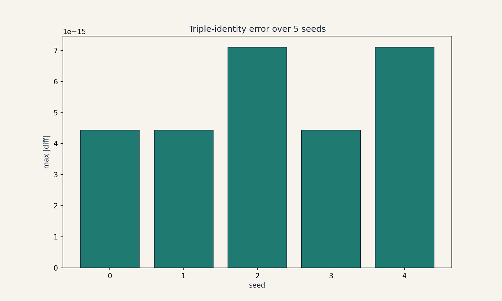
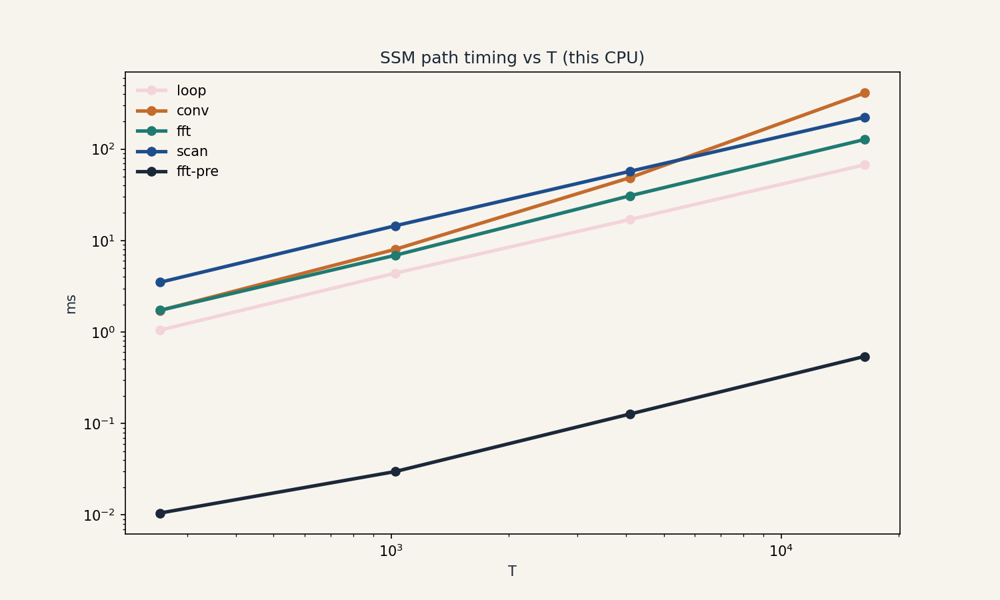

Capstone A: SSM triple identity, replication and extension
Capstone A: SSM triple identity, replication and extension
Date: 2026-10-06. Status: EXECUTED on this machine.
Script: capstones/replicate_ssm.py. Figures:
capstones/ssm_identity.png, capstones/ssm_timing.png


(metadata stripped in-script).
Question
Does the SSM triple identity (recurrence = convolution view = parallel scan) hold on random diagonal SSMs, and where does the FFT convolution view beat the sequential loop on real hardware?
Hypotheses
- H1 (replication): all three paths agree to 1e-8 on random SSMs.
- H2a (extension): the FFT convolution view, including kernel materialization, beats the sequential loop for T in {256, 1024, 4096, 16384} on this CPU.
- H2b (extension): with the kernel precomputed (the training case: K built once per parameter update), the FFT path beats the loop from some measured T onward.
Literature
U07 (Week 6, Oct 28 / Nov 1 sessions): the SSM walkthrough, the convolution view, the scan, and the FFT-convolution theorem. Public background: structured state spaces (Gu et al., 2022) and selective SSMs (Gu and Dao, 2023), cited as context, not as lecture content.
Method
Random diagonal SSMs, N = 8, A in (0.5, 0.99), 5 seeds. Four paths: Python loop, direct np.convolve, FFT with zero-padding to 2T, and a Blelloch parallel scan implemented in vectorized numpy. Timing: min of 3 runs per (T, path).
Results
- H1 REPLICATED: max |diff| across the three paths: 4.44e-15 to 7.11e-15 over 5 seeds.
- H2a FALSIFIED (negative result): the FFT path never beats the loop in the tested range (127.21 ms vs 67.30 ms at T=16384). Kernel materialization dominates: the Python-level kernel build costs more than the FFT saves.
- H2b CONFIRMED: with K precomputed, the FFT path beats the loop at every tested T (0.01 ms vs 1.05 ms at T=256. 0.54 ms vs 67.30 ms at T=16384).
Interpretation
The negative result is the lesson: the convolution view’s win is conditional on amortizing kernel materialization. In training, K is built once per optimizer step and reused across the batch: H2b applies. In a naive per-call port, H2a applies and the “fast” path loses. This is the course’s materialization theme (U04, U07) biting in practice.
Limitations
Diagonal real SSMs only. No input-dependent A (the selective case needs the scan, noted in U07 C05). Single CPU, numpy only. GPU numbers would differ. The scan implementation is correctness-grade, not performance-grade.
Reproducibility
Seed 20261006 fixed. python3 replicate_ssm.py
reproduces all numbers and both figures.